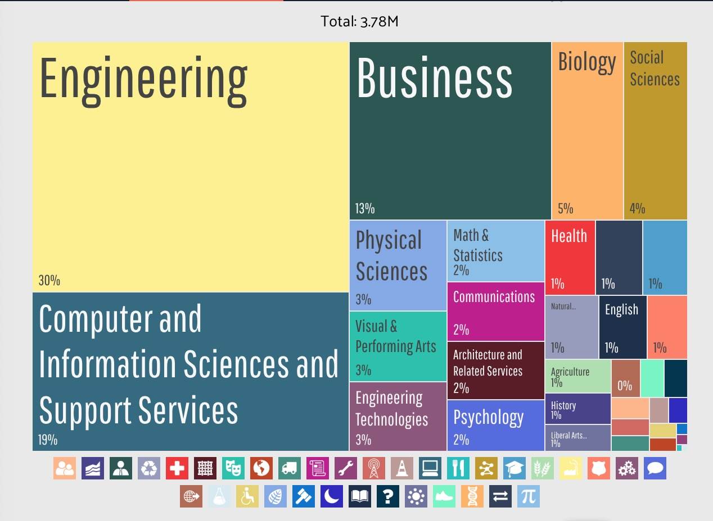

My Cause
My Cause is that the Computer Science can help me earning a good job in the future.
Although there are an unlimited number of rewarding career opportunities in computer science, many potential career changers are hesitant about this the field.
Often times, the issue results from misconceptions about computer science.
Here are some misunderstanding people usually have about my cause.
I. I have to Sit in a Cubicle and Code All Day.
Programming in a cubicle is one way that computer scientists do; it is not the entire world for an engineer. Computer science covers hardware, data information, computational thinking and more, all areas that do not necessarily require a knowledge of programming to be successful.
However, only a few of them require sitting at a desk and coding all day. Regardless of whether you work at a startup or large organization, you will be an integral member of a team.
II. CS is for Men, Geeks, Nerds, and Hackers.
While it is true that men currently outnumber women in computer science fields, this has not always been the case.
The key to getting more women and girls interested in computer science is encouraging girls to pursue STEM careers in the same way we encourage boys to do so, providing female role models for girls and designing projects that relate to real-world problems.
Computer science attracts all kinds of people: women, men, geeks, non-geeks, hackers, non-hackers, nerds, non-nerds, short people, tall people, young, old, middle-aged, “soft” college majors, and “hard” college majors.
This graphic shows the majors of people who gain Computer, engineering, & science occupations employed by various industries. Not only the engineering major students get the job, but also many student of different majors.
